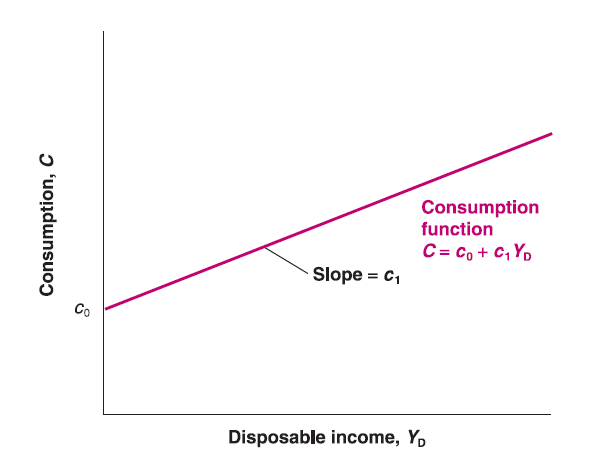

Mingze Huang
2021-07-19
Consumption (C): goods and services purchased by consumers.
Investment (I):
Fixed Investment:
Non-residential Investment: the purchase by firms of new plants or new machines.
Residential Investment: the purchase by people of new houses or apartments.
Inventory Investment = Production - Sale
Net Exports (Trade Balance) = Exports (X) - Imports (IM): exports exceed imports is said to run a trade surplus; exports less than imports is said to run a trade deficit.
Exports: the purchases of domestic goods and services by foreigners.
Imports: the purchases of foreign goods and services by domestic consumers, domestic firms and government.
Government Spending (G): good and services (government employees) by federal and local governments.
Government spending includes government expenditures consumption and government investment.
Government spending do NOT include government transfer payments (unemployment benefits and pensions, e.g.) or interest payments on government debt.
Demand (income side) always comes from consumption (C), investment (I), government spending (G) and net exports (X - IM).
The main factor determines consumption (C) is disposable income (\(Y_{D}\)), the income remains after consumers have received transfers from government and paid taxes.
\(C=c_{0}+c_{1}\cdot Y_{D}\):
\(c_{0}\) is autonomous consumption (independent of disposable income).
\(c_{1}\) is marginal propensity to consume. Assume consumers consume more if they earn more, apparently \(c_{1}\) should be positive.
\(c_{1}\cdot Y_{D}\) is called induced consumption.

Net Taxes (\(T\)): taxes minus government transfer payments. Advanced Child Tax Credit and Stimulus Check
Disposable income equals to total income (GDP) deduct net taxes: \(Y_{D}\equiv Y-T\).
Therefore, \(C=c_{0}+c_{1}(Y-T)\). Stimulus Check and Consumption
Here the model assume investment is given (exogenous) \(I=\overline{I}\).
Government choose government spending \(G\) and net taxes \(T\) by fiscal policy.
Note that GDP (\(Y\)) also represents production.
Here we’re discussing goods market equilibrium, which is the balance between quantity of supply and quantity of demand. Obviously the GDP here is real GDP: \(Y=Y^{r}\); \(Y_{D}=Y_{D}^{r}\).
Since production side equal to income side in equilibrium, if we assume zero trade balance (\(X - IM = 0\)), then\(Y^{r} = C+\overline{I}+G\) or \(Y^{r} = c_{0}+c_{1}(Y^{r}-T)+\overline{I}+G\).
Alternatively, we can look at saving.
Private saving (S): saving by consumers, is equal to disposable income minus consumption: \(S=Y_{D}^{r}-C\) or \(S=(Y^{r}-T)-C\).
Public saving: saving by government is equal to net taxes minus government spending: \(T-G\). Taxes exceeds government spending (public saving is positive), is said to run a budget surplus; taxes less than government spending (public saving is negative), is said to run a budget deficit. Federal budget deficit by CBO
Assume zero trade balance, \(Y^{r} = C+\overline{I}+G\).
Rearrange the equation: \((Y^{r}-T)-C+(T-G)=\overline{I}\).
Private saving \((Y^{r}-T)-C\) plus public saving \(T-G\) equal to investment.
In equilibrium, investment always equal to saving: \(\overline{I}=S+(T-G)\). This is so called IS relation.
In summary, the equilibrium condition for goods market:
Production == demand
investment == saving
This model assume you only have choice between two assets, money and bonds:
Money, which you can use for transactions, pays no interest. In the real world, there are two types of money: currency, and deposit accounts.
Bonds pay a positive interest rate, \(i\), but they cannot be used for transactions. In the real world, there are many types of bonds, each associated with a specific interest rate. US Treasury Bond
Note that the main reason to assume these two assets is to characterize the trade-off between interest and liquidity. There are different financial assets with liquidity and interest between those two cases.
You should hold both money and bonds. The proportion depend on two variables:
Level of transactions: You need enough money on hand to avoid selling bonds too often.
Interest rate on bond: You would like to earn interest as much as possible.
Income, saving, financial wealth and investment:
Income is what you earn from working plus what you receive in interest and dividends. It is a flow (during a given period).
Saving is the part of after-tax income that you don’t spend. It is also a flow (during a given period).
Financial wealth is the value of all your financial assets minus all your financial liabilities. It is a stock variable (accumulation up to a given moment)
Investment is the purchase of new capital goods (machine, office building, et.al).
Financial investment is NOT the investment we’re talking in economics. In many cases, it’s actually saving in economics.